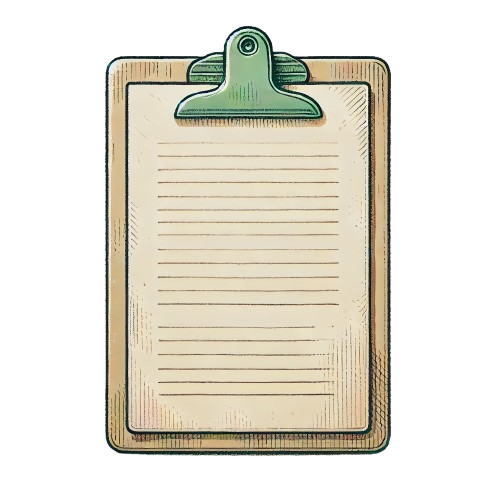

- Elaboration d’un dossier médical
- L’indemnisation de vos préjudices
- Assistance juridique et droits des victimes
- Négociation et résolution des conflits

C.A.D.U.S. vous aide à obtenir votre dossier médical et à constituer votre demande
d'indemnisation,en veillant à éviter les erreurs ou omissions. Ils vous conseillent tout
au long de votre parcours jusqu'à l'indemnisation.